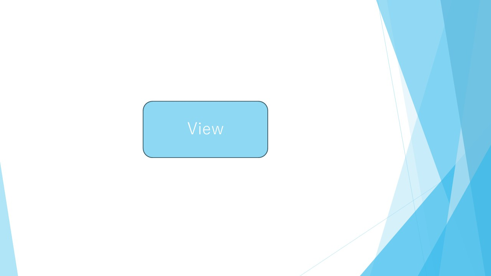
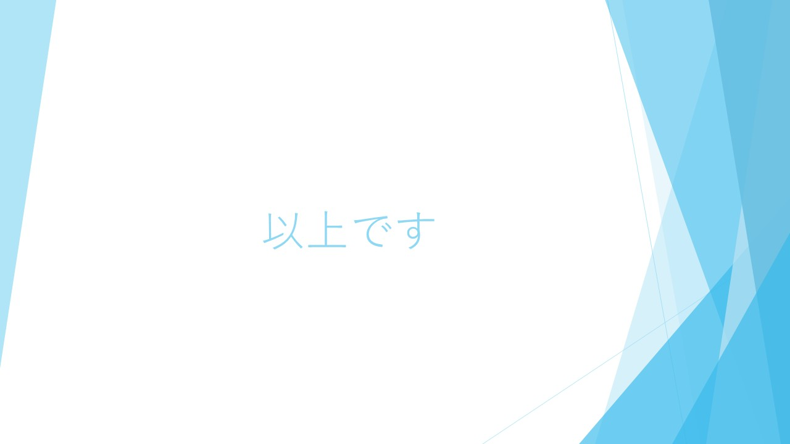

日本就職用ポートフォリオ
開発内容: DB設計、管理者ページ
プロジェクトのタイトルスライドであり、全体のテーマとチーム名を紹介しいます。
チーム「コミネコ」のイメージを表すキャラクター紹介スライドです。

プロジェクトの構成と発表の流れを示した目次スライドです。

チームメンバー5人の役割分担をかわいいキャラクターで紹介しいます。

ショッピングモールサイト「FanTastic」の目的と背景について説明しいます。

プロジェクトで使用した技術（Java, JSP, Bootstrap, GitHubなど）を分類して紹介しいます。

Viewの役割と構造を簡潔に表したスライドです。
モデル・ビュー・コントローラー(MVC)の構成とそれぞれの役割を図解で示しいます。

ERDを用いてDBテーブルの構成を示し、ユーザー、商品、注文、レビューなどの関係を視覚化しいます。

サイトのトップページから会員登録画面へ遷移する様子を示しいます。

会員登録画面の詳細。入力項目やメール認証機能の流れを示しいます。
Eclipse, JavaMail API, Daum郵便番号サービスなどの連携構成を示すスライドです。

ログイン状態のUIを示し、ユーザーがログイン後にどのように表示されるかを説明しいます。

パスワード再設定の最初のステップ。ID入力とメール認証画面を示しいます。

メールで受け取った認証コードを入力する画面です。

認証メール受信画面と新しいパスワードを入力する画面を表示しいます。

ショッピングサイトのトップページで、商品紹介スライドが含まれいます。
実際の商品リストとクリエイター紹介ページの構成を示しいます。
IDを忘れた際の検索機能とその結果表示を示しいます。
Forgot IDの手順全体を図解で説明しいます。メール認証からID確認までの流れが表示されいます。
カートに商品が入った状態と空の状態のUIを比較しいます。

カートの内容確認と決済方法選択の画面。決済モジュール連携の様子を示しいます。

各決済 수단（カカオペイ、Toss、PayPalなど）を選択したときのQRコードや支払い画面を表示しいます。
INICIS決済モジュールとの連携、NPAPI非対応に関する説明を含んでいます。

決済完了後の情報がデータベースに登録される流れとシステム構成を説明しいます。

管理者ページのログイン画面です。管理者専用のインターフェースにアクセスする入口です。

管理者がクリエイターを登録する画面で、フォームの入力項目が詳細に表示されいます。

管理者が商品を登録する画面と、実際に登録された商品の反映例を示しいます。

プロジェクトの振り返りとして、チームで得た学びや苦労、改善点などが書かれいます。

発表の最後のスライドで「以上です」とプロジェクトの締めくくりを示しいます。